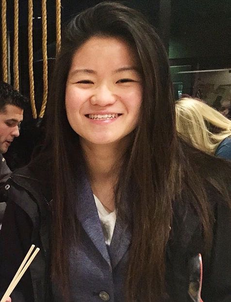

I was born in Ho Chi Minh City, Vietnam and moved to America when I was eight. I lived in Los Angeles, California for about a year and have been a resident in Austin, Texas since then. My alma matter is Texas A&M University, where I received my Bachelor of Science in Sociology with a minor in Game Designs and Development. I've been coding for about 2 years and I initially thought that I wanted to focus mainly on Game Developemnent only (had done a few gaming projects on the side). However, my future goal is to become a Full Stack Software Developer and learning more about our intricite technology. On my free time, I enjoy watching anime (Plus Ultra!) and play video games online (League of Legends, Smash, etc.). I love traveling and learning new things about the world.
